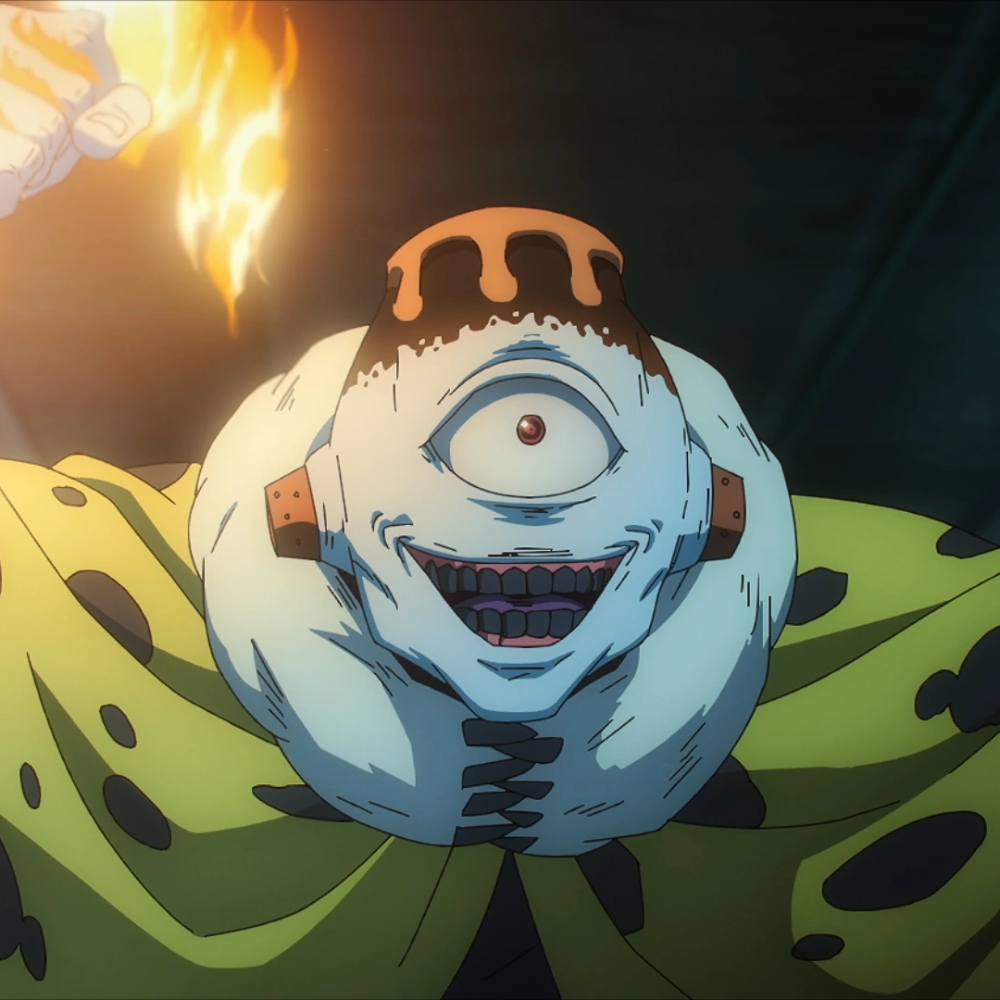
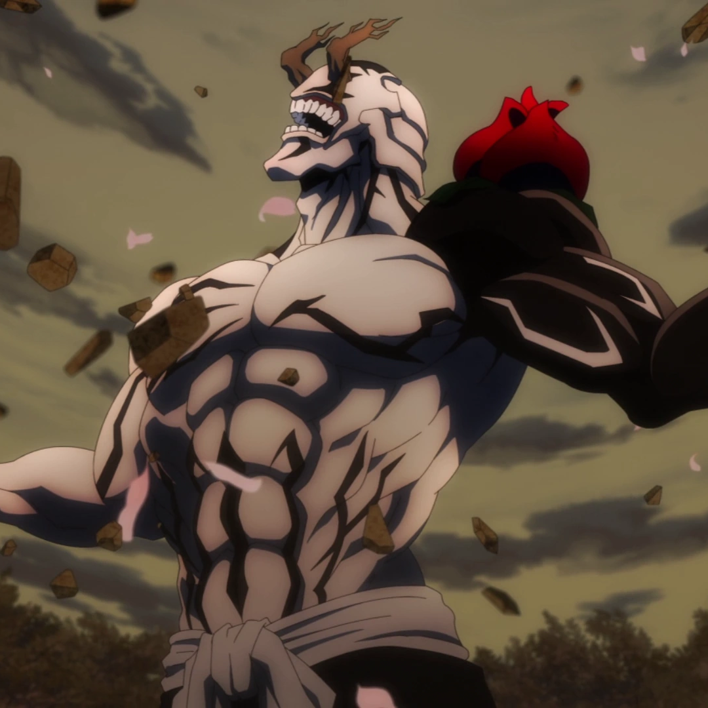
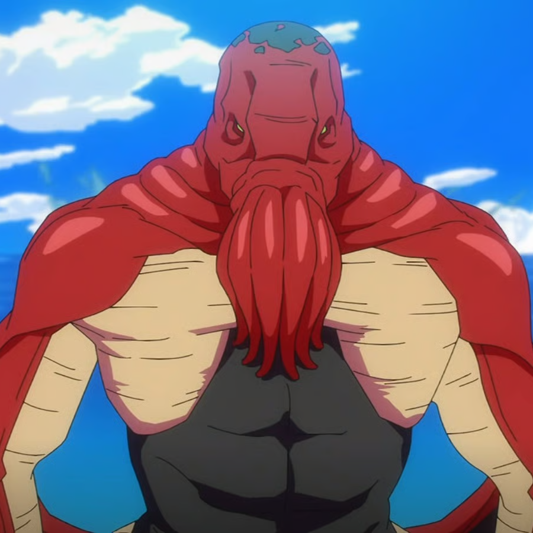
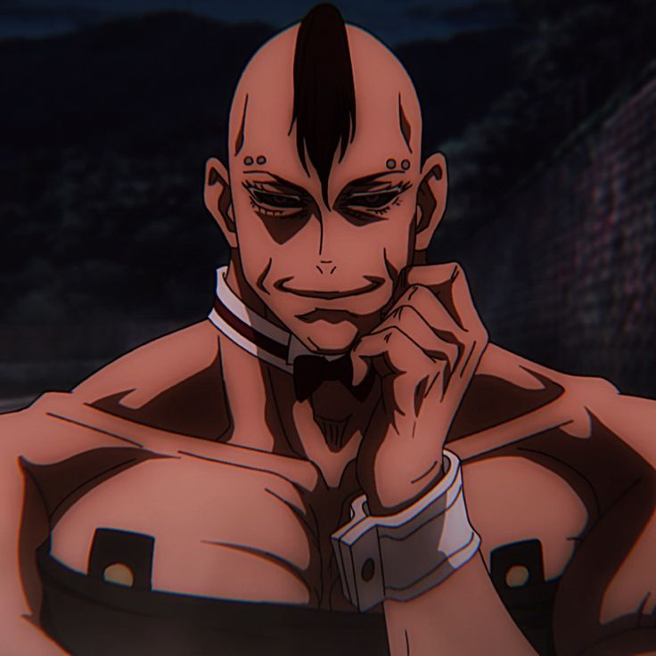
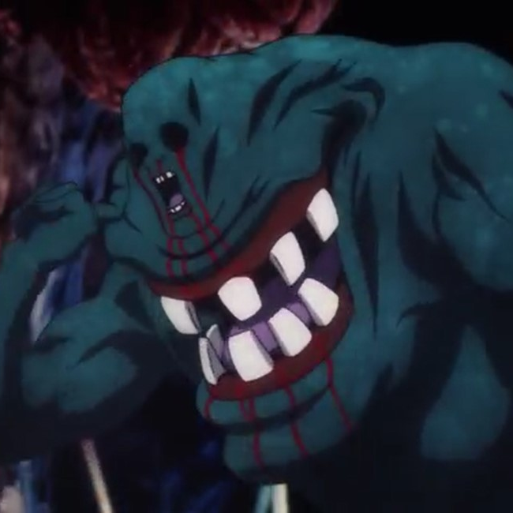

Ryomen Sukuna
The King of Curses — extremely dangerous and linked to Yuji.
The King of Curses — extremely dangerous and linked to Yuji.

A curse who manipulates souls; one of the more sinister foes.

Former ally turned antagonist with extreme beliefs about curses.

Cursed spirit with volcano abilities, member of the higher-rank curses.

Cursed spirit obsessed with protecting nature and punishing humans.

Powerful curse controlling water and aquatic monsters.

Initially an antagonist, one of the Cursed Womb: Death Paintings.

One of the Cursed Womb: Death Paintings, initially fights sorcerers.

Partner of Eso, part of the Cursed Womb siblings, fights sorcerers.

Technically a minor antagonist as part of the Zenin clan, appears briefly.

Flashback character; extremely skilled sorcerer killer relevant to S1 & S2.